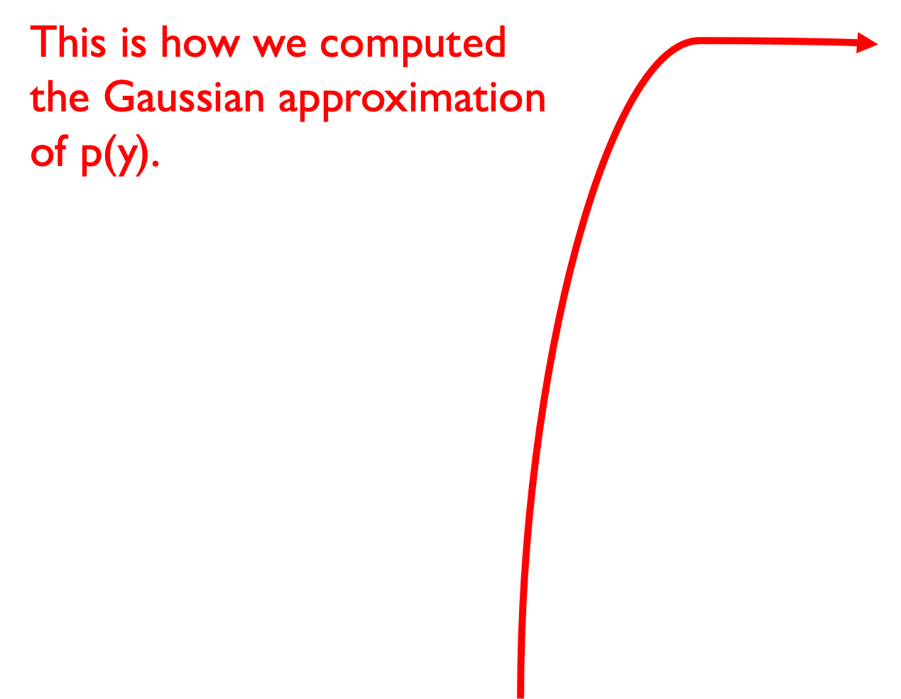
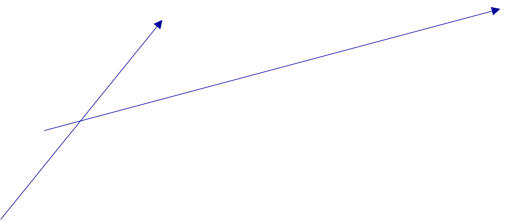
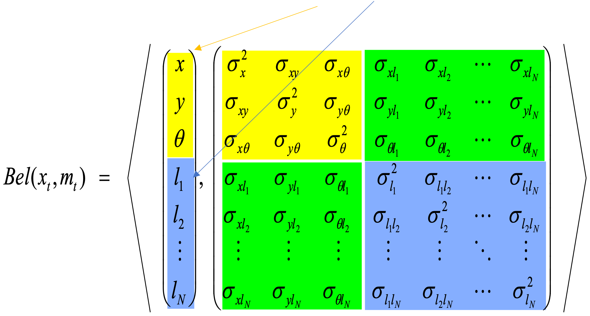

CSC477 Introduction to Mobile Robotics
Week #9: Extended Kalman Filter
Recommended reading
Chapter 3.3 in Probabilistic Robotics for EKF
Chapter 7.4 in Probabilistic Robotics for EKF-Localization
Chapter 10.2 in Probabilistic Robotics for EKF-SLAM
Kalman Filter: an instance of Bayes’ Filter
\[\begin{align}bel(x_t) &= p(x_t|u_{0:t-1}, z_{0:t}) \\ &= \eta p(z_t|x_t) \int p(x_t|u_{t-1}, x_{t-1}) bel(x_{t-1}) dx_{t-1}\end{align}\]
\[\begin{align}z_t = & Hx_t + n_t \\ & \text{with noise } n_t \sim \mathcal{N}(0, R)\end{align}\]
\[\begin{align} x_t &= Ax_{t-1} + Bu_{t-1} + Gw_{t-1} \\ & \text{with noise } w_{t-1} \sim N(0,Q) \end{align}\]
\(\qquad bel(x_0) \sim \mathcal{N}(\mu_0, \Sigma_0)\)
Kalman Filter: an instance of Bayes’ Filter
\[\begin{align}bel(x_t) &= p(x_t|u_{0:t-1}, z_{0:t}) \\ &= \eta p(z_t|x_t) \int p(x_t|u_{t-1}, x_{t-1}) bel(x_{t-1}) dx_{t-1}\end{align}\]
\[\begin{align}z_t = & h(x_t) + n_t \\ & \text{with noise } n_t \sim \mathcal{N}(0, R)\end{align}\]
\[\begin{align} x_t &= f(x_{t-1}, u_{t-1}) + Gw_{t-1} \\ & \text{with noise } w_{t-1} \sim N(0,Q) \end{align}\]
\(\qquad bel(x_0) \sim \mathcal{N}(\mu_0, \Sigma_0)\)
Suppose you replace
the linear models with
nonlinear models.
Does the posterior
\(\color{black}bel(x_t)\) remain
Gaussian?
\(\qquad\)
Kalman Filter: an instance of Bayes’ Filter
\[\begin{align}bel(x_t) &= p(x_t|u_{0:t-1}, z_{0:t}) \\ &= \eta p(z_t|x_t) \int p(x_t|u_{t-1}, x_{t-1}) bel(x_{t-1}) dx_{t-1}\end{align}\]
\[\begin{align}z_t = & h(x_t) + n_t \\ & \text{with noise } n_t \sim \mathcal{N}(0, R)\end{align}\]
\[\begin{align} x_t &= f(x_{t-1}, u_{t-1}) + Gw_{t-1} \\ & \text{with noise } w_{t-1} \sim N(0,Q) \end{align}\]
\(\qquad bel(x_0) \sim \mathcal{N}(\mu_0, \Sigma_0)\)
Suppose you replace
the linear models with
nonlinear models.
Does the posterior
\(\color{black}bel(x_t)\) remain
Gaussian? NO
\(\qquad\)
Linearity Assumption Revisited
If \(y = ax + b\)
and \(x \sim \mathcal{N}(\mu, \sigma^2)\)
then \(y \sim \mathcal{N}(a\mu + b, a^2\sigma^2)\)
Nonlinear Function
If \(y = g(x)\)
and \(x \sim \mathcal{N}(\mu, \sigma^2)\)
then y is not necessarily
distributed as a Gaussian.
How can we approximate p(y) using a single Gaussian, without having a
formula for p(y)?
IDEA #1: MONTE CARLO SAMPLING
- Draw many (e.g. 10^6) samples xi ~ p(x)
- Pass them through the nonlinear function yi = g(xi)
- Compute the empirical mean (m) and covariance (S) of the samples yi
- Return Normal(m, S)
IDEA #2: LINEARIZE THE NONLINEAR FUNCTIONS f, h
- Then we are in the case y = Gx +c, so p(y) is a Gaussian

Nonlinear Function
If \(y = g(x)\)
and \(x \sim \mathcal{N}(\mu, \sigma^2)\)
then y is not necessarily
distributed as a Gaussian.
How can we approximate p(y) using a single Gaussian, without having a
formula for p(y)?
IDEA #1: MONTE CARLO SAMPLING
- Draw many (e.g. 10^6) samples xi ~ p(x)
- Pass them through the nonlinear function yi = g(xi)
- Compute the empirical mean (m) and covariance (S) of the samples yi
- Return Normal(m, S)
IDEA #2: LINEARIZE THE NONLINEAR FUNCTIONS f, h
- Then we are in the case y = Gx +c, so p(y) is a Gaussian
Linearization
Notice how the Linearization
approximation differs from the
Monte Carlo approximation (which
is better, provided sufficiently many
samples).
That said, the Linearization approximation
can be computed efficiently, and can be
integrated into the Kalman
Filter estimator \(\rightarrow\) Extended Kalman Filter
Linearization with low approximation error
The quality of the linearization
approximation depends on the uncertainty
of p(x) but also on the shape of the nonlinearity
g(x).
In this example p(x) has small variance so
most points will be concentrated around 0.5 and
will pass through a very small region of g(x), where
g(x) is close to linear.
In this case p(y) is nearly Gaussian,
and the Linearization approximation
matches the Monte Carlo approximation.

Linearization with high approximation error
The quality of the linearization
approximation depends on the
uncertainty of p(x) but also on
the shape of the nonlinearity g(x).
In this example p(x) has high
variance so points g(x) will be
spread out around g(0.5), where
g(x) is not close to linear.
In this case p(y) is multimodal,
and the Linearization approximation
matches the Monte Carlo approximation
are both suboptimal approximations.
Again Monte Carlo is better, provided
sufficient samples.
How do we linearize?
- Using the first order Taylor expansion around the mean of the previous update step’s state estimate:
\[\begin{align*} x_{t+1} &= f(x_t, u_t) + w_t \\ &\approx f(\mu_{t|t}, u_t) + \frac{\partial f}{\partial x}(\mu_{t|t}, u_t)(x_t - \mu_{t|t}) + w_t \\ &= f(\mu_{t|t}, u_t) + F_t(x_t - \mu_{t|t}) + w_t \\ &= F_t x_t + \color{red}\boxed{\color{black}f(\mu_{t|t}, u_t) - F_t \mu_{t|t}} \color{black} + w_t \\ &= F_t x_t + \bar{u}_t + w_t \end{align*}\]
Recall how to compute the Jacobian matrix. For example, if
\(f(x_{1},x_{2},u)=[x_{1}+x_{2}^{2},x_{2}+3u,x_{1}^{4}-u^{2}]\in\mathbb{R}^{3}\)
then the Jacobian of f with respect to \(\color{black}(x_1, x_2)\) at \(\color{black}(u_1, u_2, u)\) is
\[\begin{align} \frac{\partial f}{\partial x_{1:2}}(\mu_1, \mu_2, u_1) &= \begin{bmatrix} \frac{\partial f_1}{\partial x_1} & \frac{\partial f_1}{\partial x_2} \\ \frac{\partial f_2}{\partial x_1} & \frac{\partial f_2}{\partial x_2} \\ \frac{\partial f_3}{\partial x_1} & \frac{\partial f_3}{\partial x_2} \end {bmatrix} (\mu_1, \mu_2, u_1) \\ &= \begin{bmatrix} 1 & 2\mu_2 \\ 0 & 1 \\ 4\mu_1^3 & 0 \end{bmatrix} \end{align}\]
How do we linearize?
- Using the first-order Taylor expansion around the mean of the previous prediction step’s state estimate:
\[\begin{align*} z_{t+1} &= h(x_{t+1}) + n_{t+1} \\ &\approx h(\mu_{t+1|t}) + \frac{\partial h}{\partial x}(\mu_{t+1|t})(x_t - \mu_{t+1|t}) + n_{t+1} \\ &= h(\mu_{t+1|t}) + H_{t+1}(x_{t+1} - \mu_{t+1|t}) + n_{t+1} \\ &= H_{t+1}x_{t+1} + \color{red}\boxed{\color{black}h(\mu_{t+1|t}) - H_{t+1}\mu_{t+1|t}} \color{black} + n_{t+1} \\ &= H_{t+1}x_{t+1} + \bar{c}_{t+1} + n_{t+1} \end{align*}\]
Recall how to compute the Jacobian matrix. For example, if
\(h(x_{1},x_{2}) = [x_{1}+x_{2}^{2}, x_{2}, x_{1}^{4}] \in \mathbb{R}^{3}\)
then the Jacobian of f with respect to \(\color{black}(x_1, x_2)\) at \(\color{black}(u_1, u_2)\) is
\[\begin{align} \frac{\partial h}{\partial x_{1:2}}(\mu_1, \mu_2) &= \begin{bmatrix} \frac{\partial h_1}{\partial x_1} & \frac{\partial h_1}{\partial x_2} \\ \frac{\partial h_2}{\partial x_1} & \frac{\partial h_2}{\partial x_2} \\ \frac{\partial h_3}{\partial x_1} & \frac{\partial h_3}{\partial x_2} \end {bmatrix} (\mu_1, \mu_2) \\ &= \begin{bmatrix} 1 & 2\mu_2 \\ 0 & 1 \\ 4\mu_1^3 & 0 \end{bmatrix} \end{align}\]
Extended Kalman Filter: an instance of Bayes’ Filter
\[\begin{align}bel(x_t) &= p(x_t|u_{0:t-1}, z_{0:t}) \\ &= \eta p(z_t|x_t) \int p(x_t|u_{t-1}, x_{t-1}) bel(x_{t-1}) dx_{t-1}\end{align}\]
\[\begin{align} z_t = & H x_t + \bar{c}_t + n_t \\ & \text{with noise } n_t \sim \mathcal{N}(0, R) \end{align}\]
\[\begin{align} \qquad x_t = & F_{t-1}x_{t-1} + \bar{u}_{t-1} + Gw_{t-1} \\ & \text{with noise } w_{t-1} \sim \mathcal{N}(0, Q) \end{align}\]
\(\qquad bel(x_0) \sim \mathcal{N}(\mu_0, \Sigma_0)\)
\(\qquad\quad\) EKF in N dimensions
Dynamics
\(x_{t+1} = f(x_{t},u_{t})+Gw_{t}\)
\(w_{t} \sim \mathcal{N}(0, Q)\)
Measurements
\(z_t = h(x_t) + n_t\)
\(n_t \sim \mathcal{N}(0, R)\)
Init \[bel(x_0) \sim \mathcal{N}(\mu_{0|0}, \Sigma_{0|0})\]
Prediction Step \[\mu_{t+1|t} = f(\mu_{t |t}, \mu_t)\] \[\Sigma_{t+1|t} = F_t\Sigma_{t|t}F^T_t + GQG^T\]
Update Step
Received measurement \(\bar{z}_{t+1}\) but expected to receive \(\mu_{z_{t+1}} = h(\mu_{t+1|t})\)
Prediction residual is a Gaussian random variable \(\delta z \sim \mathcal{N}(\bar{z}_{t+1} - \mu_{z_{t+1}}, S_{t+1})\)
where the covariance of the residual is \(S_{t+1} = H_{t+1}\Sigma_{t+1|t}H^T_{t+1} + R\)
Kalman Gain (optimal correction factor): \(K_{t+1}=\Sigma_{t+1|t}H_{t+1}^{T}S_{t+1}^{-1}\)
\[\mu_{t+1|t+1}=\mu_{t+1|t}+K_{t+1}(\bar{z}_{t+1}-\mu_{z_{t+1}})\]
\[\Sigma_{t+1|t+1}=\Sigma_{t+1|t}-K_{t+1}H_{t+1}\Sigma_{t+1|t}\]
EKF Summary
Efficient : Polynomial in measurement dimensionality k and state dimensionality n: \[O(k^{2.376} + n^2)\]
Not optimal (unlike the Kalman Filter for linear systems)
Can diverge if nonlinearities are large
Works surprisingly well even when all assumptions are violated
As in KF, inverting
the covariance of the
residual is O(k^2.376)
Example #1: EKF-Localization
“Using sensory information to locate the robot in its environment is the most fundamental problem to providing a mobile robot with autonomous capabilities.” [Cox ’91]
- Given
- Map of the environment.
- Sequence of sensor measurements.
- Wanted
- Estimate of the robot’s position.
- Problem classes
- Position tracking
- Global localization
- Kidnapped robot problem (recovery)
Landmark-based Localization
Landmarks, whose
position \(\color{black}(l_{x}^{(i)}, l_{y}^{(i)})\)
in the world is known.
Each robot measures
its range and bearing
from each landmark
to localize itself.
State of a robot:
\(\color{black} x_{t} = \begin{bmatrix} p_{x}(t) \\ p_{y}(t) \\ \theta(t) \end{bmatrix}\)
Landmark-based Localization
Measurement at time t,
\(\color{black}z_t = \begin{bmatrix} \dots \\ z_t^{(i)} \\ \dots \end{bmatrix}\)
is a variable-sized
vector, depending on the
landmarks that are
visible at time t.
Each measurement is
a 2D vector, containing
range and bearing from
the robot to a landmark.
\[z_t^{(i)} = h_i(x_t) = \left[ \begin{pmatrix} \sqrt{(p_x(t)-l_x^{(i)})^2 + (p_y(t)-l_y^{(i)})^2} \\ \text{atan2}(p_y(t)-l_y^{(i)}, p_x(t)-l_x^{(i)})-\theta(t) \end{pmatrix} \right] + n_t\]
Estimation Sequence (1)

Estimation Sequence (2)
Comparison to true trajectory

Example #2: EKF-SLAM
A robot is exploring an unknown, static environment.
- Given:
- The robot’s controls
- Observations of nearby features
- Estimate:
- Map of features
- Path of the robot
Structure of Landmark-based SLAM
Why is SLAM a hard problem?
SLAM : robot path and map are both unknown
Robot path error correlates errors in the map
Why is SLAM a hard problem?
- In the real world, the mapping between observations and landmarks is unknown
- Picking wrong data associations can have catastrophic consequences
- Pose error correlates data associations
EKF-SLAM
- Map with N landmarks: (3+2N)-dimensional Gaussian

- Can handle hundreds of dimensions
Appendix
EKF-SLAM

Map
Covariance matrix
EKF-SLAM

Map
Covariance matrix
EKF-SLAM
Map
Covariance matrix
Properties of EKF-SLAM (Linear Case)
[Dissanayake et al., 2001]
Theorem :
The determinant of any sub-matrix of the map covariance matrix decreases monotonically as successive observations are made.
Theorem :
In the limit the landmark estimates become fully correlated